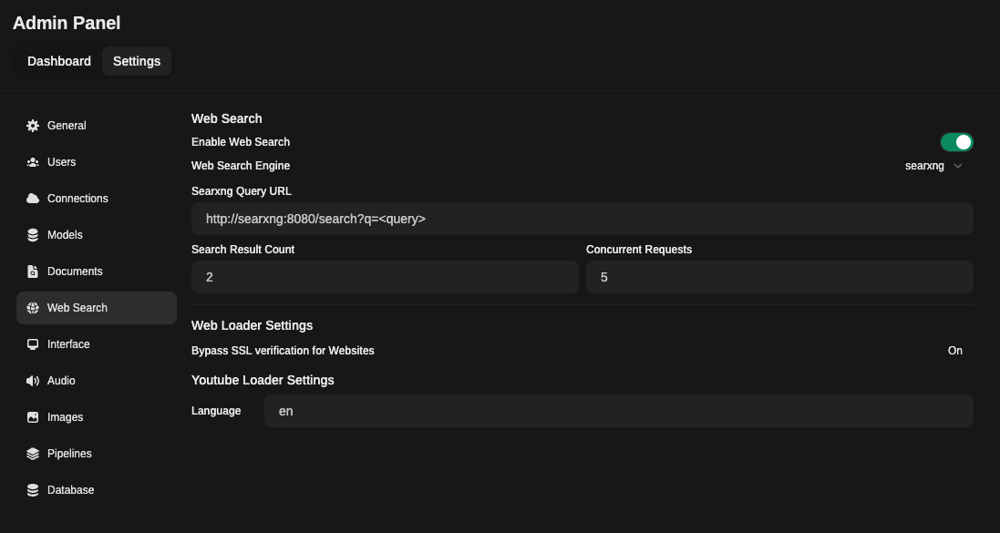

Searxng
Este tutorial é uma contribuição da comunidade e não é suportado pela equipe Nullcore. Serve apenas como uma demonstração sobre como personalizar o Nullcore para o seu caso de uso específico. Quer contribuir? Confira o tutorial contribuinte.
Este guia fornece instruções sobre como configurar os recursos de pesquisa da web no webui aberto usando o Searxng no Docker.
Searxng (Docker)
O Searxng é um mecanismo de metasearch da Internet gratuito que agrega resultados de vários serviços de pesquisa e bancos de dados. Os usuários não são rastreados nem perfilados.
1. Configuração Searxng
Para configurar o Searxng de maneira ideal para uso com o Nullcore, siga estas etapas:
Etapa 1:git cloneSearxng Docker e navegar até a pasta:
- Crie um novo diretório
searxng-docker
Clone o repositório Searxng-Docker. Esta pasta conterá seus arquivos de configuração Searxng. Consulte oDocumentação Searxngpara instruções de configuração.
clone git https://github.com/searxng/searxng-docker.git
Navegue até osearxng-dockerrepositório:
CD Searxng-Docker
Etapa 2: localize e modifique o.envarquivo:
- Descomment
SEARXNG_HOSTNAMEdo.envArquive e defina de acordo:
# Por padrão, ouça em https: // localhost
# Para mudar isso:
# * Uncomment Searxng_hostname, e substitua <dost> pelo nome do host Searxng
ass
Searxng_hostname = localhost: 8080/
# LetSencrypt_Email = <ailemey>
# Opcional:
# Se você executar uma instância muito pequena ou muito grande, convém alterar a quantidade de trabalhadores e tópicos de UWSGI usados por trabalhador
# Mais trabalhadores (= processos) significa que mais solicitações de pesquisa podem ser tratadas ao mesmo tempo, mas também causa mais uso de recursos
# Searxng_uwsgi_workers = 4
# Searxng_uwsgi_threads = 4
Etapa 3: modifique odocker-compose.yamlarquivo
- Remova o
localhostrestrição modificando odocker-compose.yamlarquivo:
sed -i "S/127.0.0.1: 8080/0.0.0.0: 8080/"
Etapa 4: conceda as permissões necessárias
- Permita que o contêiner crie novos arquivos de configuração executando o seguinte comando no diretório raiz:
sudo chmod a+rwx searxng-docker/Searxng
Etapa 5: Crie um não restritivolimiter.tomlArquivo
- Crie um não restritivo
searxng-docker/searxng/limiter.tomlarquivo de configuração:
Searxng-Docker/Searxng/Limiter.toml
# Este arquivo de configuração atualiza o arquivo de configuração padrão
# Consulte https://github.com/searxng/searxng/blob/master/searx/botdetection/limiter.toml
[BOTDETECTION.IP_LIMIT]
# Ativar o método link_token no método ip_limit
link_token = false
[BOTDETECTION.IP_LISTS]
block_ip = []
pass_ip = []
Etapa 6: Remova o padrãosettings.ymlArquivo
- Exclua o padrão
searxng-docker/searxng/settings.ymlArquivo Se houver, pois será regenerado no primeiro lançamento do Searxng:
rm Searxng-Docker/Searxng/Settings.yml
Etapa 7: Crie um novosettings.ymlArquivo
Na primeira execução, você deve removercap_drop: - ALLdodocker-compose.yamlArquivo para osearxngServiço para criar com sucesso/etc/searxng/uwsgi.ini. Isso é necessário porque ocap_drop: - ALLa diretiva remove todos os recursos, incluindo os necessários para a criação douwsgi.iniarquivo. Após a primeira execução, você deve re-adquirircap_drop: - ALLpara odocker-compose.yamlArquive por razões de segurança.
- Traga o contêiner momentaneamente para gerar um novo arquivo Settings.yml:
Docker compor -d -d; sono 10; Docker compor
Etapa 8: Adicione formatos e atualize o número da porta
- Adicione formatos HTML e JSON ao
searxng-docker/searxng/settings.ymlarquivo:
sed -i 's/formats: \ [\ "html \" \/]/formatos: [\ "html \", \ "json \"]/' Searxng -docker/Searxng/Settings.yml
Gere uma chave secreta para sua instância Searxng:
sed -i "s | ultrasecretKey | $ (openssl rand -hex 32) | g" Searxng -docker/Searxng/Settings.yml
Os usuários do Windows podem usar o seguinte script PowerShell para gerar a chave secreta:
$ Randombytes = New-Object Byte [] 32
(New-Object Security.cryptography.rngcryptoServiceProvider) .GetBytes ($ Randombytes)
$ secretKey = -Join ($ Randombytes | foreach -object {"{0: x2}" -f $ _})
(Get-Content Searxng-Docker/Searxng/Settings.yml) -Rplace 'ultrasecretKey', $ secretKey | Set-Content Searxng-Docker/Searxng/Settings.yml
Atualize o número da porta noserverseção para corresponder à que você definiu mais cedo (neste caso,8080
sed -i 's/porta: 8080/porta: 8080/' Searxng -Docker/Searxng/Settings.yml
Mude obind_addressComo desejado:
sed -i 's/bind_address: "0.0.0.0"/bind_address: "127.0.0.1"/' Searxng -docker/Searxng/Settings.yml
Arquivos de configuração
Searxng-Docker/Searxng/Settings.yml (Extrato)
O padrãosettings.ymlO arquivo contém muitas configurações do motor. Abaixo está um extrato do que o padrãosettings.ymlo arquivo pode parecer:
Searxng-Docker/Searxng/Settings.yml
# Consulte https://docs.searxng.org/admin/settings/settings.html#settings-use-default-settings
use_default_settings verdadeiro
servidor
# base_url é definido na variável de ambiente searxng_base_url, consulte .env e Docker-compose.yml
secret_key "Ultrasecretkey" # mude isso!
limitador verdadeiro # pode ser desativado para uma instância privada
image_proxy verdadeiro
porta 8080
bind_address "0.0.0.0"
Ui
static_use_hash verdadeiro
procurar
Safe_search 0
AutoComplete
default_lang
formatos
html
JSON# json é necessário
# Remova o formato para negar o acesso, use minúsculo.
# Formatos: [HTML, CSV, JSON, RSS]
Redis
# URL para conectar o banco de dados Redis. É substituído por $ {Searxng_redis_url}.
# https://docs.searxng.org/admin/settings/settings_redis.html#settings-redis
urlRedis// Redis6379/0
A porta no arquivo Settings.yml para Searxng deve corresponder ao número do número da porta no seu arquivo Docker-Compose.yml para Searxng.
Etapa 9: Atualizaçãouwsgi.iniArquivo
- Garanta o seu
searxng-docker/searxng/uwsgi.iniO arquivo corresponde ao seguinte:
Searxng-Docker/Searxng/uwsgi.ini
[uwsgi]
# Quem vai executar o código
uid = Searxng
gid = Searxng
# Número de trabalhadores (geralmente contagem de CPU)
# Valor padrão: %k (= número de núcleo da CPU, consulte Dockerfile)
trabalhadores = %k
# Número de tópicos por trabalhador
# Valor padrão: 4 (consulte Dockerfile)
threads = 4
# A direita concedida no soquete criado
chmod-socket = 666
# Plugin para usar e configuração de intérprete
Intestrador único = true
mestre = verdadeiro
plugin = python3
preguiçoso-aplicativo = verdadeiro
Ativar-threads = 4
# Módulo para importar
Módulo = Searx.WebApp
# Virtualenv e Python Path
pythonpath =/usr/local/Searxng/
chdir =/usr/local/Searxng/Searx/
# Definir automaticamente o nome do nome para algo significativo
nome automático = true
# Desative o registro de solicitação para privacidade
desabilitar logging = true
log-5xx = true
# Defina o tamanho máximo de uma solicitação (excluído o corpo de solicitação)
buffer-size = 8192
# Não mantém vivo
# Consulte https://github.com/searx/searx-docker/issues/24
add-header = conexão: feche
# uwsgi serve os arquivos estáticos
estático map =/static =/usr/local/Searxng/Searx/static
# expira definido para um dia
Estatic-expires = /* 86400
static-gzip-all = true
Offic-threads = 4
2. Configuração alternativa
Como alternativa, se você não deseja modificar a configuração padrão, pode simplesmente criar um vaziosearxng-dockerPasta e siga o restante das instruções de configuração.
DOCKER COMPOSE CONFIGURAÇÃO
Adicione as seguintes variáveis de ambiente ao seu webui abertodocker-compose.yamlarquivo:
serviços
Open-Webui
ambiente
Enable_rag_web_search Verdadeiro
Rag_web_search_engine "Searxng"
Rag_web_search_result_count 3
Rag_web_search_concurrent_requests 10
Searxng_query_url "http: // searxng: 8080/pesquisa? Q = <Query>"
Crie a.envArquivo para Searxng:
# Searxng
Searxng_hostname = localhost: 8080/
Em seguida, adicione o seguinte ao Searxng'sdocker-compose.yamlarquivo:
serviços
Searxng
container_nameSearxng
imagemSearxng/Searxngmais recente
portas
"8080: 8080"
volumes
./searxng/etc/Searxngrw
Env_File
.env
reiniciara menos queparou
CAP_DROP
TODOS
cap_add
Chown
SetGid
Setuid
Dac_override
log
motorista "JSON-FILE"
opções
Max-tamanho "1m"
Max-file "1"
Sua pilha está pronta para ser lançada com:
Docker compõe -d
Na primeira execução, você deve removercap_drop: - ALLdodocker-compose.yamlArquivo para osearxngServiço para criar com sucesso/etc/searxng/uwsgi.ini. Isso é necessário porque ocap_drop: - ALLa diretiva remove todos os recursos, incluindo os necessários para a criação douwsgi.iniarquivo. Após a primeira execução, você deve re-adquirircap_drop: - ALLpara odocker-compose.yamlArquive por razões de segurança.
Como alternativa, você pode executar o Searxng diretamente usandodocker run
Docker Run-Nome Searxng --env-File .env -v ./searxng:/etc/searxng:rw -p 8080: 8080--Restart, a menos que estropado--CAP-DROP-CAP-ADD CHOW --Log-Opt Max-size = 1M--Log-Opt Max-File = 1 Searxng/Searxng: mais recente
3. Confirme a conectividade
Confirme a conectividade com a Searxng da sua instância de contêiner Webui Open na sua interface de linha de comando:
Docker Exec -Et Open -Webui Curl http: //host.docker.internal: 8080/pesquisa? Q = this+é+a+teste+consulta & formato = json
4. Configuração da GUI
- Navegar para:
Admin PanelSettingsWeb Search - Alternar
Enable Web Search - Definir
Web Search EngineDo menu suspenso parasearxng - Definir
Searxng Query URLa um dos seguintes exemplos:
http://searxng:8080/search?q=<query>(Usando o nome do contêiner e a porta exposta, adequada para configurações baseadas em docker)http://host.docker.internal:8080/search?q=<query>(usando ohost.docker.internalNome do DNS e a porta host, adequados para configurações baseadas em docker)http://<searxng.local>/search?q=<query>(usando um nome de domínio local, adequado para acesso à rede local)https://<search.domain.com>/search?q=<query>(usando um nome de domínio personalizado para uma instância Searxng auto-hospedada, adequada para acesso público ou privado)
Observe o/search?q=<query>parte é obrigatória.
- Ajuste o
Search Result CounteConcurrent Requestsvalores de acordo - Salvar alterações

5. Usando a pesquisa na web em um bate -papo
Para acessar a pesquisa da Web, clique no campo + próximo ao campo de entrada da mensagem.
Aqui você pode ativar/desativar a pesquisa na web.
![Web Search UI Toggle]()
Seguindo estas etapas, você configurará com sucesso o Searxng com o Nullcore, permitindo que você execute pesquisas na Web usando o mecanismo Searxng.
Observação
Você terá que ativar explicitamente isso ativado/desativado em um bate -papo.
Isso é ativado por sessão, por exemplo. Recarregar a página, mudando para outro bate -papo será desativado.